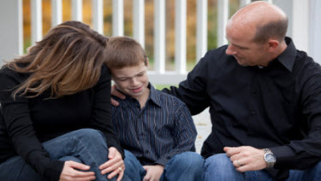
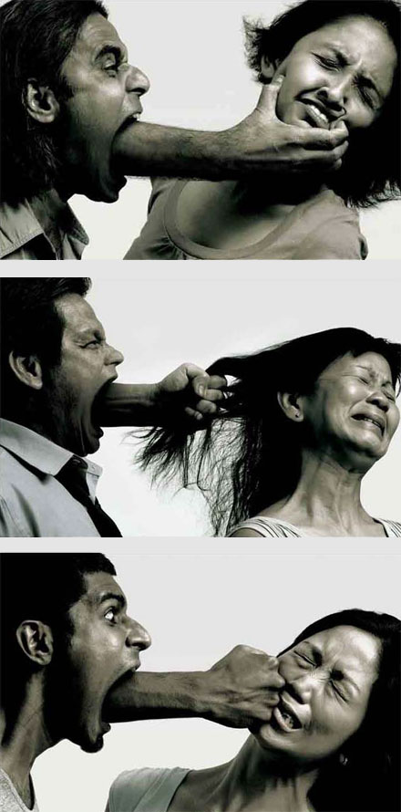

Much debate, research and experimentation has been devoted to the theory of nature versus nurture with regards child behavioral outcome. No doubt genetic predisposition have a part to play in the shaping of the character outcome of a child, nonetheless much emphasis on this factor can be misleading, resulting in parental-inactiveness, “Many are also strongly tempted to attribute even complex behaviors to inborn traits, saying,
“He was just born that way.” In overemphasizing genetic influence, parents may feel less pressure to intervene when their children veer off into less desirable habits.”(Alan, Dolahite& Draper, 2006,p.119)
to devote their best efforts to the teaching and rearing of their children in gospel principles which will keep them close to the Church. The home is the basis of a righteous life, and no other instru-mentality can take its place or fulfill its essential functions in carrying forward this God-given responsibility (First Presidency of The Church of Jesus Christ of Latter-day Saints, 1999, p. 3).

The need for children to be reared in a two parent family structure
No doubt how a child is nurtured especially during their formative years is a huge determinant how they emerge as adults. Presence of parental supervision or the lack thereof can easily be seen in single versus both parent homes. Children who grow up often without father figures sometimes tend to lack a wholeness of security. May turn out unruly or have challenges on how to act towards authority figures.
Proverb 22:6 “Train up a child in the way he should go: and when he is old, he will not depart from it.”
It is imperative to never underestimate the impact a righteous parent has on their children. No doubt children go astray despite adequate parental guidance, but the likely hood of a return to the parental commandment is higher than those who never had such a support system. Simply put; children who deviate from parental upbringing can return to what they already know but chose to rebel against, then children who have no idea what the right way is in the first place, because they have no knowledge about such a way in the first place.
Though the husband is the acknowledged head of the family, but with regards raising of children both parents are equal. Like two parts that fit, one is incomplete without the other. When one is deprived of full participation and imbalance occurs, which if not corrected leads to an incompleteness in the upbringing of the children. Though many single parents do a fantastic job raising their kids alone, but the ideal which must be striven at great cost is a two-parent family structure. Without doubt, the nature of equality of a man and his wife in a family remains an issue of contention. Going by the scriptures.

No doubt how a child is nurtured especially during their formative years is a huge determinant how they emerge as adults. Presence of parental supervision or the lack thereof can easily be seen in single versus both parent homes. Children who grow up often without father figures sometimes tend to lack a wholeness of security. May turn out unruly or have challenges on how to act towards authority figures.
Genesis 3: 16 “16 Unto the awoman he said, I will greatly bmultiply thy csorrow and thy conception; in sorrow thou shalt bring forth dchildren; and thy desire shall be to thy ehusband, and he shall rule over thee.”
Exercised to the extreme a man becomes a tyrant in the home. Accepting no input from his wife who is meant to be his coruler, or the reverse case, which is so rampant in the first world owing to the spreading ‘woke culture’ he becomes effeminate. Unable to exert the influence that God intended at the very beginning. The issue at sake is balance. According to modern day revelation;
D&C 121: 39 “We have learned by sad experience that it is the nature and disposition of almost all men, as soon as they get a little authority, as they suppose, they will immediately begin to exercise unrighteous dominion.”
Much of the learning which takes place in the home is done by imprinting; thus they need for role models can not be overstated. The boys, their father, the girls, their mother. The boys also need a good example from their father on how best to treat a woman, also do the girls need a good example how to treat a husband. No doubt parents will from time to time disagree on issues regarding upbringing of their children, but the key is to act as a united front. When children observe an imbalance of power in the home they tend to lose respect for the undervalued parent, be it the mother or the father.
Discipline, Rebellion and Support
In furtherance to the above principle of dominion. The nurture of children must be a balance of discipline and love. Though the manner of its application may vary from culture, also taking into due consideration the temperament of the child involved. But there’s some measure of consensus regarding the potency of an authoritarian form of parenting;
“Authoritative parents are presumed to create a positive interactional climate based on an optimal balance of high warmth and high expectations, which environment in turn leads children and adolescents to be most receptive to parental influence.” (Alan, Dolahite& Draper, 2006,p.119)
The big question remains, does authoritarian parenting lead to negative behavioral conditioning in children? I come from an African family, raised in Nigeria, as such I am no stranger to authoritarian parenting. One thing I can say, haven acquired some perspective due to experience. I must say I am for the better given the manner I was raised by my parents. They did not spank me except as consequence to undesirable behaviors. Their words could often be hash and cutting, but never crossing the line of abuse. Its one thing to spank a child, another to withhold from spanking, yet unleash unrelenting vituperations on their self-esteem, which amounts to verbal abuse.
“I teach the people correct principles, and they govern themselves” (quoted in Young, 1865, Journal of Discourses, 10:57–58). In parenting, mothers and fathers have the challenge and opportunity to apply general principles derived from inspired sources and adapt them to their individual and family circumstances as they diligently strive to meet their children’s physical, emotional, and spiritual needs” (see D&C 68:25–28; 75:28; 83:4–5; Mosiah 4:14; 1 Timothy 5:4).
In my opinion, what amounts to negative authoritarian parenting is the failure to strike a balance between love and discipline. Unrighteous dominion. A father and mother in general are to use gentle persuasion, more love than strictness. I must confess I was scared of my parents’ reaction anytime I did something wrong or out of the acceptable social norm. But when I wasn’t rocking the boat, I was fine. I did not cringe at the presence of my father; except I had done something wrong and knew deep down I merited some form of reprimand. Though there are more imaginative or effective ways to make children comply or learn the needful social skills to be productive members of the society, nonetheless I am convinced excessive gentility is an approach which heralds permissiveness and false sense of entitlement in children. Sometimes parents have no choice but to be firm, as nothing short of strict discipline will cut it
The three Ugly faces of Abuse
Ihave in my office a file of letters received from women who cry out over the treatment they receive from their husbands in their homes. They . . . tell of husbands who lose their tempers and shout at their wives and children. They tell of men who demand offensive intimate relations. They tell of men who demean them and put them down and of fathers who seem to know little of the meaning of patience and forbearance with ref-erence to their children. —President Gordon B. Hinckley (1990, p. 52
There are many factors responsible for abuse in the home, as well as nature of how it is manifested. For the sake of simplicity, we will recognize three major categories. Sexual abuse, emotional abuse and physical abuse. Sexual abuse has to do with all forms of inappropriate sexual activities between spouses and parents and children. We must be quick to note sexual abuse carries the heaviest weight with regards its malicious capacity to injure and scare a child for life. Indeed, much statistic suggest that majority of serial killers had at one point or the other suffered to sexual abuse as a child.
(CrimeTraveller)“Researchers from Radford University in Virginia have compared the childhood abuse history of 50 convicted US serial killers classified as ‘lust killers’ against the rates of childhood abuse reported in the general population. Their results indicate considerably higher levels of physical, sexual, and psychological abuse in the serial killer study group.”
With the case of emotional abuse, this may tend to go unnoticed for a while given it often isn’t accompanied by any physical symptom or evidence. Defining emotional abuse can be complicated by the fact that much of its term tends to be interchangeable. It can be referred to as psychological abuse, emotional violence or mental abuse. Emotional abuse can be defined is any abusive behavior, though not physical, may be verbally aggressive. Aimed at intimidation, manipulation and humiliation. It often sources from a desire to diminish another person’s sense of identity, dignity and self-worth. Simply put, calculated at breaking their spirit. Emotional abuse, when carried on for a long time or against those with fragile psych may result in anxiety, depression, suicidal thoughts or behaviors and post-traumatic stress disorder(PTSD).
No doubt physical abuse is the most popular. This involves inflicting physical harm on any member of the family. Though much of the attention in this regard is focused on the father, given he is often the offender since he is the strongest, but sometimes strange incidents involving wives putting their hands on their husbands and even children being violent towards their parents. Most people who suffer from abuse tend to come from homes where abuse of some form had been perpetrated. Thus, becoming perpetrators, themselves, or silent victims who seem to accept it as the norm.
Since the abusers are often aware of the position of the law with regards these forms of abuse, they tend to use the threat of more violence to keep their victim silent. Often it’s the husband, using he economic advantage to lord over his household. That’s why it is often recommended that women should have a degree or some form of trade they can fall back on in the advent of a separation or incapacitation of their spouse for any reasons even besides abuse. In my country Nigeria, when cases of abuse are discovered, when it’s the man of the house perpetrating the abuse, they let them go considering the fact that no social warfare infrastructure exist as an alternative means of provision for the family. But this is not the case in sexual abuse, where they are prosecuted to the full extent of the law, leaving the family destitute, without a breadwinner.
Family Services
An abuse prevention program is a social program meant to assist teachers, parents and guardians recognize the signs of abuse in a child. These program often focus on reestablishing the child’s self-esteem. Often children who have suffered some form of abuse tend to manifest anti-social abuse, in an attempt for them to act out, or simply as a negative coping mechanism, but this plunges them deeper into a cycle of harm, lack of consideration of the well-being of others. They may turn to drugs, prostitution, vagrancy, gangs, and outright criminality.
One means by which victims of abuse receive treatment is psychotherapy or talk therapy. Although there is little guarantee of full recovery, but this also helps victims regulate the raging emotion of anger, guilt or violence they feel. It also helps for them to form therapeutic relationships. This is a relationship between a healthcare professional and a patient. This relationship is crucial because it embodies trust as the foundation upon which any such treatment can occur. Almost like a replacement of the same very trust that was violated by the abuser who is often a close family member.
Exercised to the extreme a man becomes a tyrant in the home. Accepting no input from his wife who is meant to be his coruler, or the reverse case, which is so rampant in the first world owing to the spreading ‘woke culture’ he becomes effeminate. Unable to exert the influence that God intended at the very beginning. The issue at sake is balance. According to modern day revelation;
In furtherance to forming a therapeutic relation, a good therapeutic alliance also goes hand in hand to work wonders on the road to recovery. A therapeutic alliance can be defined as when a therapist effectively uses their analytic skills to engage a client’s reasonability. For instance, a therapist trying to make a client see that though they feel guilt or shame due to the abuse they suffered, but that they were helpless and in no way to blame given their circumstance. Research has also shown that working alliance is a strong predictor of psychotherapy outcome.
Wholesome family recreation: Building strong families
“Psychologists and social philosophers describe contemporary happiness as transient states of feeling well (Hudson, 1992). In practical terms, contemporary happiness is characterized by the pursuit of comfort, pleasure, and wealth in the form of material goods.” (Alan, Dolahite & Draper, 2006, p.225)
This sometimes explains the reason behind a certain restlessness and an inexplicable hunger to fill one’s life with pleasurable hobbies that may leave room for true bonding opportunities in families. As with regarding social medias such as Facebook, Instagram where glossy images of people having fun with traveling, partying, and eating expensive food, we begin to sense that those with the most unhappy lives are the ones who dedicate all their efforts to make it seem they are always having a blast. As is in the quote above, usually the wellbeing of the family members isn’t always part of these pursuits. For instance, having a hobby that can’t be shared with family members, and yet spending much time on it without consideration for moderation is antifamily.
In order for an activity to be considered as family wholesome, it must include the participation of the family members. No doubt everyone is entitled to their individual hobbies or indulgences, but a family must have an activity where everyone fits in, and not a one-sided enjoyment. Everyone isn’t wired the same way, as such preferences vary. But putting into consideration everyone’s preference to chose something everyone can enjoy will be well worth it.
One factor that must be considered when picking a hobby is not only its pleasurably, but also its contribution to psychological and physical investment. Some activities may appear to be pleasurable or fun, yet they do not lead to a happy or good life at the long run. Sometimes the conception of happiness can get twisted with the ultimate all human desires. The need to participate in activities that lead to human development. Thus, some may find happiness elude them because they fail to realize it is not attained by the wholehearted chase of pleasure, but rather fulfilling of goals that lead to human development. That’s why the following quote makes so much sense.
“In truth, happiness is not all that it’s cracked up to be, and most people don’t really want to be happy all the time anyway. People often choose to go to movies or operas that are very unsettling—that terrify, sadden, disgust, or anger them. There is some-thing about experiencing these emotions, whether in the safe and comfortable context of a theater or at a dangerous mountain pass in the Himalayas that is appealing to many people. . . . The true meaning of being alive is not just to feel happy, but to experience the full range of human emotions” (1996, p.192, italics in original)
Crucibles and healing
An abuse prevention program is a social program meant to assist teachers, parents and guardians recognize the signs of abuse in a child. These program often focus on reestablishing the child’s self-esteem. Often children who have suffered some form of abuse tend to manifest anti-social abuse, in an attempt for them to act out, or simply as a negative coping mechanism, but this plunges them deeper into a cycle of harm, lack of consideration of the well-being of others. They may turn to drugs, prostitution, vagrancy, gangs, and outright criminality.
One means by which victims of abuse receive treatment is psychotherapy or talk therapy. Although there is little guarantee of full recovery, but this also helps victims regulate the raging emotion of anger, guilt or violence they feel. It also helps for them to form therapeutic relationships. This is a relationship between a healthcare professional and a patient. This relationship is crucial because it embodies trust as the foundation upon which any such treatment can occur. Almost like a replacement of the same very trust that was violated by the abuser who is often a close family member.
Exercised to the extreme a man becomes a tyrant in the home. Accepting no input from his wife who is meant to be his coruler, or the reverse case, which is so rampant in the first world owing to the spreading ‘woke culture’ he becomes effeminate. Unable to exert the influence that God intended at the very beginning. The issue at sake is balance. According to modern day revelation;
In furtherance to forming a therapeutic relation, a good therapeutic alliance also goes hand in hand to work wonders on the road to recovery. A therapeutic alliance can be defined as when a therapist effectively uses their analytic skills to engage a client’s reasonability. For instance, a therapist trying to make a client see that though they feel guilt or shame due to the abuse they suffered, but that they were helpless and in no way to blame given their circumstance. Research has also shown that working alliance is a strong predictor of psychotherapy outcome.
Repentance and forgiveness in family life
An abuse prevention program is a social program meant to assist teachers, parents and guardians recognize the signs of abuse in a child. These program often focus on reestablishing the child’s self-esteem. Often children who have suffered some form of abuse tend to manifest anti-social abuse, in an attempt for them to act out, or simply as a negative coping mechanism, but this plunges them deeper into a cycle of harm, lack of consideration of the well-being of others. They may turn to drugs, prostitution, vagrancy, gangs, and outright criminality.
One means by which victims of abuse receive treatment is psychotherapy or talk therapy. Although there is little guarantee of full recovery, but this also helps victims regulate the raging emotion of anger, guilt or violence they feel. It also helps for them to form therapeutic relationships. This is a relationship between a healthcare professional and a patient. This relationship is crucial because it embodies trust as the foundation upon which any such treatment can occur. Almost like a replacement of the same very trust that was violated by the abuser who is often a close family member.
Exercised to the extreme a man becomes a tyrant in the home. Accepting no input from his wife who is meant to be his coruler, or the reverse case, which is so rampant in the first world owing to the spreading ‘woke culture’ he becomes effeminate. Unable to exert the influence that God intended at the very beginning. The issue at sake is balance. According to modern day revelation;
In furtherance to forming a therapeutic relation, a good therapeutic alliance also goes hand in hand to work wonders on the road to recovery. A therapeutic alliance can be defined as when a therapist effectively uses their analytic skills to engage a client’s reasonability. For instance, a therapist trying to make a client see that though they feel guilt or shame due to the abuse they suffered, but that they were helpless and in no way to blame given their circumstance. Research has also shown that working alliance is a strong predictor of psychotherapy outcome.